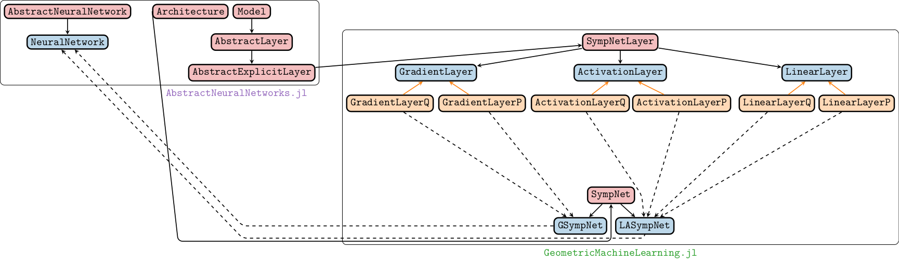

SympNets with GeometricMachineLearning.jl
This page serves as a short introduction into using SympNets with GeometricMachineLearning.jl. For the general theory see the theory section.
With GeometricMachineLearning.jl one can easily implement SympNets. The steps are the following :
- Specify the architecture with the functions
GSympNetandLASympNet, - Specify the type and the backend with
NeuralNetwork, - Pick an optimizer for training the network,
- Train the neural networks!
We discuss these points is some detail:
Specifying the architecture
To call an $LA$-SympNet, one needs to write
lasympnet = LASympNet(dim; depth=5, nhidden=1, activation=tanh, init_upper_linear=true, init_upper_act=true) LASympNet takes one obligatory argument:
- dim : the dimension of the phase space (i.e. an integer) or optionally an instance of
DataLoader. This latter option will be used below.
and several keywords argument :
- depth : the depth for all the linear layers. The default value set to 5 (if width>5, width is set to 5). See the theory section for more details; there depth was called $n$.
- nhidden : the number of pairs of linear and activation layers with default value set to 1 (i.e the $LA$-SympNet is a composition of a linear layer, an activation layer and then again a single layer).
- activation : the activation function for all the activations layers with default set to tanh,
- initupperlinear : a boolean that indicates whether the first linear layer changes $q$ first. By default this is
true. - initupperact : a boolean that indicates whether the first activation layer changes $q$ first. By default this is
true.
G-SympNet
To call a G-SympNet, one needs to write
gsympnet = GSympNet(dim; upscaling_dimension=2*dim, nhidden=2, activation=tanh, init_upper=true) GSympNet takes one obligatory argument:
- dim : the dimension of the phase space (i.e. an integer) or optionally an instance of
DataLoader. This latter option will be used below.
and severals keywords argument :
- upscaling_dimension: The first dimension of the matrix with which the input is multiplied. In the theory section this matrix is called $K$ and the upscaling dimension is called $m$.
- nhidden: the number of gradient layers with default value set to 2.
- activation : the activation function for all the activations layers with default set to tanh.
- init_upper : a boolean that indicates whether the first gradient layer changes $q$ first. By default this is
true.
Loss function
The loss function described in the theory section is the default choice used in GeometricMachineLearning.jl for training SympNets.
Data Structures in GeometricMachineLearning.jl

Examples
Let us see how to use it on several examples.
Example of a pendulum with G-SympNet
Let us begin with a simple example, the pendulum system, the Hamiltonian of which is
\[H:(q,p)\in\mathbb{R}^2 \mapsto \frac{1}{2}p^2-cos(q) \in \mathbb{R}.\]
Here we generate pendulum data with the script GeometricMachineLearning/scripts/pendulum.jl:
using GeometricMachineLearning
# load script
include("../../../scripts/pendulum.jl")
# specify the data type
type = Float16
# get data
qp_data = GeometricMachineLearning.apply_toNT(a -> type.(a), pendulum_data((q=[0.], p=[1.]); tspan=(0.,100.)))
# call the DataLoader
dl = DataLoader(qp_data)[ Info: You have provided a NamedTuple with keys q and p; the data are matrices. This is interpreted as *symplectic data*.Next we specify the architectures. GeometricMachineLearning.jl provides useful defaults for all parameters although they can be specified manually (which is done in the following):
# layer dimension for gradient module
const upscaling_dimension = 10
# hidden layers
const nhidden = 1
# activation function
const activation = tanh
# calling G-SympNet architecture
gsympnet = GSympNet(dl, upscaling_dimension=upscaling_dimension, nhidden=nhidden, activation=activation)
# calling LA-SympNet architecture
lasympnet = LASympNet(dl, nhidden=nhidden, activation=activation)
# specify the backend
backend = CPU()
# initialize the networks
la_nn = NeuralNetwork(lasympnet, backend, type)
g_nn = NeuralNetwork(gsympnet, backend, type)Remark: We can also specify whether we would like to start with a layer that changes the $q$-component or one that changes the $p$-component. This can be done via the keywords init_upper for GSympNet, and init_upper_linear and init_upper_act for LASympNet.
We have to define an optimizer which will be use in the training of the SympNet. For more details on optimizer, please see the corresponding documentation. In this example we use Adam:
# set up optimizer; for this we first need to specify the optimization method (argue for why we need the optimizer method)
opt_method = AdamOptimizer(; T=type)
la_opt = Optimizer(opt_method, la_nn)
g_opt = Optimizer(opt_method, g_nn)We can now perform the training of the neural networks. The syntax is the following :
# number of training epochs
const nepochs = 1000
# Batchsize used to compute the gradient of the loss function with respect to the parameters of the neural networks.
const batch_size = 100
batch = Batch(batch_size)
# perform training (returns array that contains the total loss for each training step)
g_loss_array = g_opt(g_nn, dl, batch, nepochs)
la_loss_array = la_opt(la_nn, dl, batch, nepochs)
Progress: 0%|▏ | ETA: 1:57:39
TrainingLoss: 0.75244140625
Progress: 100%|█████████████████████████████████████████| Time: 0:00:17
TrainingLoss: 0.0009613037109375
Progress: 0%|▏ | ETA: 0:48:10
TrainingLoss: 170.0
Progress: 1%|▎ | ETA: 0:16:18
TrainingLoss: 149.125
Progress: 1%|▍ | ETA: 0:09:56
TrainingLoss: 132.875
Progress: 1%|▋ | ETA: 0:07:13
TrainingLoss: 118.0
Progress: 2%|▊ | ETA: 0:05:42
TrainingLoss: 106.0
Progress: 2%|▉ | ETA: 0:04:44
TrainingLoss: 94.6875
Progress: 3%|█▏ | ETA: 0:04:04
TrainingLoss: 85.0625
Progress: 3%|█▎ | ETA: 0:03:34
TrainingLoss: 76.5625
Progress: 3%|█▍ | ETA: 0:03:11
TrainingLoss: 68.875
Progress: 4%|█▌ | ETA: 0:02:53
TrainingLoss: 60.9375
Progress: 4%|█▊ | ETA: 0:02:39
TrainingLoss: 54.125
Progress: 5%|█▉ | ETA: 0:02:27
TrainingLoss: 47.9375
Progress: 5%|██ | ETA: 0:02:16
TrainingLoss: 42.71875
Progress: 5%|██▎ | ETA: 0:02:08
TrainingLoss: 38.40625
Progress: 6%|██▍ | ETA: 0:02:00
TrainingLoss: 34.78125
Progress: 6%|██▌ | ETA: 0:01:54
TrainingLoss: 31.328125
Progress: 7%|██▊ | ETA: 0:01:48
TrainingLoss: 28.578125
Progress: 7%|██▉ | ETA: 0:01:43
TrainingLoss: 25.71875
Progress: 7%|███ | ETA: 0:01:38
TrainingLoss: 23.3125
Progress: 8%|███▎ | ETA: 0:01:34
TrainingLoss: 21.09375
Progress: 8%|███▍ | ETA: 0:01:31
TrainingLoss: 19.09375
Progress: 9%|███▌ | ETA: 0:01:27
TrainingLoss: 17.296875
Progress: 9%|███▊ | ETA: 0:01:24
TrainingLoss: 15.8359375
Progress: 9%|███▉ | ETA: 0:01:21
TrainingLoss: 14.21875
Progress: 10%|████ | ETA: 0:01:19
TrainingLoss: 12.8828125
Progress: 10%|████▏ | ETA: 0:01:16
TrainingLoss: 11.640625
Progress: 11%|████▍ | ETA: 0:01:14
TrainingLoss: 10.46875
Progress: 11%|████▌ | ETA: 0:01:12
TrainingLoss: 9.4609375
Progress: 11%|████▋ | ETA: 0:01:10
TrainingLoss: 8.5546875
Progress: 12%|████▉ | ETA: 0:01:08
TrainingLoss: 7.734375
Progress: 12%|█████ | ETA: 0:01:07
TrainingLoss: 7.01171875
Progress: 13%|█████▏ | ETA: 0:01:05
TrainingLoss: 6.328125
Progress: 13%|█████▍ | ETA: 0:01:03
TrainingLoss: 5.6328125
Progress: 13%|█████▌ | ETA: 0:01:02
TrainingLoss: 5.046875
Progress: 14%|█████▋ | ETA: 0:01:01
TrainingLoss: 4.5390625
Progress: 14%|█████▉ | ETA: 0:00:59
TrainingLoss: 4.01953125
Progress: 15%|██████ | ETA: 0:00:58
TrainingLoss: 3.62890625
Progress: 15%|██████▏ | ETA: 0:00:57
TrainingLoss: 3.2734375
Progress: 15%|██████▍ | ETA: 0:00:56
TrainingLoss: 2.978515625
Progress: 16%|██████▌ | ETA: 0:00:55
TrainingLoss: 2.71875
Progress: 16%|██████▋ | ETA: 0:00:54
TrainingLoss: 2.4921875
Progress: 17%|██████▊ | ETA: 0:00:53
TrainingLoss: 2.27734375
Progress: 17%|███████ | ETA: 0:00:52
TrainingLoss: 2.10546875
Progress: 17%|███████▏ | ETA: 0:00:51
TrainingLoss: 1.951171875
Progress: 18%|███████▎ | ETA: 0:00:50
TrainingLoss: 1.814453125
Progress: 18%|███████▌ | ETA: 0:00:49
TrainingLoss: 1.693359375
Progress: 19%|███████▋ | ETA: 0:00:48
TrainingLoss: 1.58984375
Progress: 19%|███████▊ | ETA: 0:00:48
TrainingLoss: 1.50390625
Progress: 19%|████████ | ETA: 0:00:47
TrainingLoss: 1.423828125
Progress: 20%|████████▏ | ETA: 0:00:46
TrainingLoss: 1.3505859375
Progress: 20%|████████▎ | ETA: 0:00:45
TrainingLoss: 1.2900390625
Progress: 21%|████████▌ | ETA: 0:00:45
TrainingLoss: 1.2421875
Progress: 21%|████████▋ | ETA: 0:00:44
TrainingLoss: 1.1865234375
Progress: 21%|████████▊ | ETA: 0:00:44
TrainingLoss: 1.13671875
Progress: 22%|█████████ | ETA: 0:00:43
TrainingLoss: 1.07421875
Progress: 22%|█████████▏ | ETA: 0:00:42
TrainingLoss: 0.998046875
Progress: 23%|█████████▎ | ETA: 0:00:42
TrainingLoss: 0.9140625
Progress: 23%|█████████▍ | ETA: 0:00:41
TrainingLoss: 0.82275390625
Progress: 23%|█████████▋ | ETA: 0:00:41
TrainingLoss: 0.74609375
Progress: 24%|█████████▊ | ETA: 0:00:40
TrainingLoss: 0.68212890625
Progress: 24%|█████████▉ | ETA: 0:00:40
TrainingLoss: 0.59716796875
Progress: 25%|██████████▏ | ETA: 0:00:39
TrainingLoss: 0.53564453125
Progress: 25%|██████████▎ | ETA: 0:00:39
TrainingLoss: 0.46875
Progress: 25%|██████████▍ | ETA: 0:00:38
TrainingLoss: 0.420654296875
Progress: 26%|██████████▋ | ETA: 0:00:38
TrainingLoss: 0.36572265625
Progress: 26%|██████████▊ | ETA: 0:00:37
TrainingLoss: 0.328857421875
Progress: 27%|██████████▉ | ETA: 0:00:37
TrainingLoss: 0.2890625
Progress: 27%|███████████▏ | ETA: 0:00:36
TrainingLoss: 0.252685546875
Progress: 27%|███████████▎ | ETA: 0:00:36
TrainingLoss: 0.2213134765625
Progress: 28%|███████████▍ | ETA: 0:00:36
TrainingLoss: 0.19482421875
Progress: 28%|███████████▌ | ETA: 0:00:35
TrainingLoss: 0.169677734375
Progress: 29%|███████████▊ | ETA: 0:00:35
TrainingLoss: 0.14794921875
Progress: 29%|███████████▉ | ETA: 0:00:34
TrainingLoss: 0.1292724609375
Progress: 29%|████████████ | ETA: 0:00:34
TrainingLoss: 0.11285400390625
Progress: 30%|████████████▎ | ETA: 0:00:34
TrainingLoss: 0.09783935546875
Progress: 30%|████████████▍ | ETA: 0:00:33
TrainingLoss: 0.08538818359375
Progress: 31%|████████████▌ | ETA: 0:00:33
TrainingLoss: 0.0760498046875
Progress: 31%|████████████▊ | ETA: 0:00:32
TrainingLoss: 0.0677490234375
Progress: 31%|████████████▉ | ETA: 0:00:32
TrainingLoss: 0.06109619140625
Progress: 32%|█████████████ | ETA: 0:00:32
TrainingLoss: 0.055999755859375
Progress: 32%|█████████████▎ | ETA: 0:00:31
TrainingLoss: 0.051910400390625
Progress: 33%|█████████████▍ | ETA: 0:00:31
TrainingLoss: 0.05023193359375
Progress: 33%|█████████████▌ | ETA: 0:00:31
TrainingLoss: 0.04962158203125
Progress: 33%|█████████████▊ | ETA: 0:00:30
TrainingLoss: 0.04937744140625
Progress: 34%|█████████████▉ | ETA: 0:00:30
TrainingLoss: 0.049652099609375
Progress: 34%|██████████████ | ETA: 0:00:30
TrainingLoss: 0.04937744140625
Progress: 35%|██████████████▏ | ETA: 0:00:30
TrainingLoss: 0.04962158203125
Progress: 35%|██████████████▍ | ETA: 0:00:29
TrainingLoss: 0.0494384765625
Progress: 35%|██████████████▌ | ETA: 0:00:29
TrainingLoss: 0.049163818359375
Progress: 36%|██████████████▋ | ETA: 0:00:29
TrainingLoss: 0.049407958984375
Progress: 36%|██████████████▉ | ETA: 0:00:28
TrainingLoss: 0.048675537109375
Progress: 37%|███████████████ | ETA: 0:00:28
TrainingLoss: 0.0491943359375
Progress: 37%|███████████████▏ | ETA: 0:00:28
TrainingLoss: 0.049041748046875
Progress: 37%|███████████████▍ | ETA: 0:00:27
TrainingLoss: 0.0489501953125
Progress: 38%|███████████████▌ | ETA: 0:00:27
TrainingLoss: 0.048583984375
Progress: 38%|███████████████▋ | ETA: 0:00:27
TrainingLoss: 0.0487060546875
Progress: 39%|███████████████▉ | ETA: 0:00:27
TrainingLoss: 0.049072265625
Progress: 39%|████████████████ | ETA: 0:00:26
TrainingLoss: 0.0487060546875
Progress: 39%|████████████████▏ | ETA: 0:00:26
TrainingLoss: 0.048583984375
Progress: 40%|████████████████▍ | ETA: 0:00:26
TrainingLoss: 0.049102783203125
Progress: 40%|████████████████▌ | ETA: 0:00:26
TrainingLoss: 0.048828125
Progress: 41%|████████████████▋ | ETA: 0:00:25
TrainingLoss: 0.0487060546875
Progress: 41%|████████████████▊ | ETA: 0:00:25
TrainingLoss: 0.04840087890625
Progress: 41%|█████████████████ | ETA: 0:00:25
TrainingLoss: 0.048553466796875
Progress: 42%|█████████████████▏ | ETA: 0:00:25
TrainingLoss: 0.048736572265625
Progress: 42%|█████████████████▎ | ETA: 0:00:24
TrainingLoss: 0.0484619140625
Progress: 43%|█████████████████▌ | ETA: 0:00:24
TrainingLoss: 0.048553466796875
Progress: 43%|█████████████████▋ | ETA: 0:00:24
TrainingLoss: 0.048248291015625
Progress: 43%|█████████████████▊ | ETA: 0:00:24
TrainingLoss: 0.04791259765625
Progress: 44%|██████████████████ | ETA: 0:00:23
TrainingLoss: 0.04803466796875
Progress: 44%|██████████████████▏ | ETA: 0:00:23
TrainingLoss: 0.048004150390625
Progress: 45%|██████████████████▎ | ETA: 0:00:23
TrainingLoss: 0.048553466796875
Progress: 45%|██████████████████▌ | ETA: 0:00:23
TrainingLoss: 0.047882080078125
Progress: 45%|██████████████████▋ | ETA: 0:00:22
TrainingLoss: 0.04766845703125
Progress: 46%|██████████████████▊ | ETA: 0:00:22
TrainingLoss: 0.047698974609375
Progress: 46%|███████████████████ | ETA: 0:00:22
TrainingLoss: 0.048248291015625
Progress: 47%|███████████████████▏ | ETA: 0:00:22
TrainingLoss: 0.047882080078125
Progress: 47%|███████████████████▎ | ETA: 0:00:22
TrainingLoss: 0.0477294921875
Progress: 47%|███████████████████▍ | ETA: 0:00:21
TrainingLoss: 0.0478515625
Progress: 48%|███████████████████▋ | ETA: 0:00:21
TrainingLoss: 0.048095703125
Progress: 48%|███████████████████▊ | ETA: 0:00:21
TrainingLoss: 0.0479736328125
Progress: 49%|███████████████████▉ | ETA: 0:00:21
TrainingLoss: 0.047393798828125
Progress: 49%|████████████████████▏ | ETA: 0:00:21
TrainingLoss: 0.047607421875
Progress: 49%|████████████████████▎ | ETA: 0:00:20
TrainingLoss: 0.0474853515625
Progress: 50%|████████████████████▍ | ETA: 0:00:20
TrainingLoss: 0.0474853515625
Progress: 50%|████████████████████▋ | ETA: 0:00:20
TrainingLoss: 0.047698974609375
Progress: 51%|████████████████████▊ | ETA: 0:00:20
TrainingLoss: 0.04736328125
Progress: 51%|████████████████████▉ | ETA: 0:00:19
TrainingLoss: 0.0472412109375
Progress: 51%|█████████████████████▏ | ETA: 0:00:19
TrainingLoss: 0.04718017578125
Progress: 52%|█████████████████████▎ | ETA: 0:00:19
TrainingLoss: 0.046875
Progress: 52%|█████████████████████▍ | ETA: 0:00:19
TrainingLoss: 0.0472412109375
Progress: 53%|█████████████████████▋ | ETA: 0:00:19
TrainingLoss: 0.047088623046875
Progress: 53%|█████████████████████▊ | ETA: 0:00:19
TrainingLoss: 0.047027587890625
Progress: 53%|█████████████████████▉ | ETA: 0:00:18
TrainingLoss: 0.04693603515625
Progress: 54%|██████████████████████ | ETA: 0:00:18
TrainingLoss: 0.0467529296875
Progress: 54%|██████████████████████▎ | ETA: 0:00:18
TrainingLoss: 0.047119140625
Progress: 55%|██████████████████████▍ | ETA: 0:00:18
TrainingLoss: 0.04693603515625
Progress: 55%|██████████████████████▌ | ETA: 0:00:18
TrainingLoss: 0.04681396484375
Progress: 55%|██████████████████████▊ | ETA: 0:00:17
TrainingLoss: 0.0467529296875
Progress: 56%|██████████████████████▉ | ETA: 0:00:17
TrainingLoss: 0.0465087890625
Progress: 56%|███████████████████████ | ETA: 0:00:17
TrainingLoss: 0.04681396484375
Progress: 57%|███████████████████████▎ | ETA: 0:00:17
TrainingLoss: 0.04656982421875
Progress: 57%|███████████████████████▍ | ETA: 0:00:17
TrainingLoss: 0.046630859375
Progress: 57%|███████████████████████▌ | ETA: 0:00:16
TrainingLoss: 0.046630859375
Progress: 58%|███████████████████████▊ | ETA: 0:00:16
TrainingLoss: 0.0465087890625
Progress: 58%|███████████████████████▉ | ETA: 0:00:16
TrainingLoss: 0.046051025390625
Progress: 59%|████████████████████████ | ETA: 0:00:16
TrainingLoss: 0.046051025390625
Progress: 59%|████████████████████████▎ | ETA: 0:00:16
TrainingLoss: 0.04656982421875
Progress: 59%|████████████████████████▍ | ETA: 0:00:16
TrainingLoss: 0.04608154296875
Progress: 60%|████████████████████████▌ | ETA: 0:00:15
TrainingLoss: 0.046478271484375
Progress: 60%|████████████████████████▋ | ETA: 0:00:15
TrainingLoss: 0.04644775390625
Progress: 61%|████████████████████████▉ | ETA: 0:00:15
TrainingLoss: 0.04608154296875
Progress: 61%|█████████████████████████ | ETA: 0:00:15
TrainingLoss: 0.0462646484375
Progress: 61%|█████████████████████████▏ | ETA: 0:00:15
TrainingLoss: 0.0460205078125
Progress: 62%|█████████████████████████▍ | ETA: 0:00:14
TrainingLoss: 0.0460205078125
Progress: 62%|█████████████████████████▌ | ETA: 0:00:14
TrainingLoss: 0.045745849609375
Progress: 63%|█████████████████████████▋ | ETA: 0:00:14
TrainingLoss: 0.045745849609375
Progress: 63%|█████████████████████████▉ | ETA: 0:00:14
TrainingLoss: 0.0460205078125
Progress: 63%|██████████████████████████ | ETA: 0:00:14
TrainingLoss: 0.045806884765625
Progress: 64%|██████████████████████████▏ | ETA: 0:00:14
TrainingLoss: 0.04583740234375
Progress: 64%|██████████████████████████▍ | ETA: 0:00:13
TrainingLoss: 0.04571533203125
Progress: 65%|██████████████████████████▌ | ETA: 0:00:13
TrainingLoss: 0.04534912109375
Progress: 65%|██████████████████████████▋ | ETA: 0:00:13
TrainingLoss: 0.045623779296875
Progress: 65%|██████████████████████████▉ | ETA: 0:00:13
TrainingLoss: 0.045379638671875
Progress: 66%|███████████████████████████ | ETA: 0:00:13
TrainingLoss: 0.0452880859375
Progress: 66%|███████████████████████████▏ | ETA: 0:00:13
TrainingLoss: 0.04547119140625
Progress: 67%|███████████████████████████▎ | ETA: 0:00:12
TrainingLoss: 0.04534912109375
Progress: 67%|███████████████████████████▌ | ETA: 0:00:12
TrainingLoss: 0.045318603515625
Progress: 67%|███████████████████████████▋ | ETA: 0:00:12
TrainingLoss: 0.04534912109375
Progress: 68%|███████████████████████████▊ | ETA: 0:00:12
TrainingLoss: 0.045135498046875
Progress: 68%|████████████████████████████ | ETA: 0:00:12
TrainingLoss: 0.045013427734375
Progress: 69%|████████████████████████████▏ | ETA: 0:00:12
TrainingLoss: 0.044921875
Progress: 69%|████████████████████████████▎ | ETA: 0:00:11
TrainingLoss: 0.04473876953125
Progress: 69%|████████████████████████████▌ | ETA: 0:00:11
TrainingLoss: 0.0445556640625
Progress: 70%|████████████████████████████▋ | ETA: 0:00:11
TrainingLoss: 0.044464111328125
Progress: 70%|████████████████████████████▊ | ETA: 0:00:11
TrainingLoss: 0.0440673828125
Progress: 71%|█████████████████████████████ | ETA: 0:00:11
TrainingLoss: 0.044158935546875
Progress: 71%|█████████████████████████████▏ | ETA: 0:00:11
TrainingLoss: 0.0440673828125
Progress: 71%|█████████████████████████████▎ | ETA: 0:00:10
TrainingLoss: 0.04351806640625
Progress: 72%|█████████████████████████████▌ | ETA: 0:00:10
TrainingLoss: 0.0439453125
Progress: 72%|█████████████████████████████▋ | ETA: 0:00:10
TrainingLoss: 0.043609619140625
Progress: 73%|█████████████████████████████▊ | ETA: 0:00:10
TrainingLoss: 0.0435791015625
Progress: 73%|█████████████████████████████▉ | ETA: 0:00:10
TrainingLoss: 0.04364013671875
Progress: 73%|██████████████████████████████▏ | ETA: 0:00:10
TrainingLoss: 0.043243408203125
Progress: 74%|██████████████████████████████▎ | ETA: 0:00:10
TrainingLoss: 0.043182373046875
Progress: 74%|██████████████████████████████▍ | ETA: 0:00:09
TrainingLoss: 0.042999267578125
Progress: 75%|██████████████████████████████▋ | ETA: 0:00:09
TrainingLoss: 0.043121337890625
Progress: 75%|██████████████████████████████▊ | ETA: 0:00:09
TrainingLoss: 0.042816162109375
Progress: 75%|██████████████████████████████▉ | ETA: 0:00:09
TrainingLoss: 0.04266357421875
Progress: 76%|███████████████████████████████▏ | ETA: 0:00:09
TrainingLoss: 0.04266357421875
Progress: 76%|███████████████████████████████▎ | ETA: 0:00:09
TrainingLoss: 0.04229736328125
Progress: 77%|███████████████████████████████▍ | ETA: 0:00:08
TrainingLoss: 0.042572021484375
Progress: 77%|███████████████████████████████▋ | ETA: 0:00:08
TrainingLoss: 0.0418701171875
Progress: 77%|███████████████████████████████▊ | ETA: 0:00:08
TrainingLoss: 0.041748046875
Progress: 78%|███████████████████████████████▉ | ETA: 0:00:08
TrainingLoss: 0.041778564453125
Progress: 78%|████████████████████████████████ | ETA: 0:00:08
TrainingLoss: 0.0416259765625
Progress: 79%|████████████████████████████████▎ | ETA: 0:00:08
TrainingLoss: 0.0419921875
Progress: 79%|████████████████████████████████▍ | ETA: 0:00:08
TrainingLoss: 0.0416259765625
Progress: 79%|████████████████████████████████▌ | ETA: 0:00:07
TrainingLoss: 0.041259765625
Progress: 80%|████████████████████████████████▊ | ETA: 0:00:07
TrainingLoss: 0.041015625
Progress: 80%|████████████████████████████████▉ | ETA: 0:00:07
TrainingLoss: 0.040740966796875
Progress: 81%|█████████████████████████████████ | ETA: 0:00:07
TrainingLoss: 0.04071044921875
Progress: 81%|█████████████████████████████████▎ | ETA: 0:00:07
TrainingLoss: 0.040191650390625
Progress: 81%|█████████████████████████████████▍ | ETA: 0:00:07
TrainingLoss: 0.040283203125
Progress: 82%|█████████████████████████████████▌ | ETA: 0:00:06
TrainingLoss: 0.040374755859375
Progress: 82%|█████████████████████████████████▊ | ETA: 0:00:06
TrainingLoss: 0.0400390625
Progress: 83%|█████████████████████████████████▉ | ETA: 0:00:06
TrainingLoss: 0.03961181640625
Progress: 83%|██████████████████████████████████ | ETA: 0:00:06
TrainingLoss: 0.039764404296875
Progress: 83%|██████████████████████████████████▎ | ETA: 0:00:06
TrainingLoss: 0.03948974609375
Progress: 84%|██████████████████████████████████▍ | ETA: 0:00:06
TrainingLoss: 0.039642333984375
Progress: 84%|██████████████████████████████████▌ | ETA: 0:00:06
TrainingLoss: 0.03912353515625
Progress: 85%|██████████████████████████████████▋ | ETA: 0:00:05
TrainingLoss: 0.039398193359375
Progress: 85%|██████████████████████████████████▉ | ETA: 0:00:05
TrainingLoss: 0.039154052734375
Progress: 85%|███████████████████████████████████ | ETA: 0:00:05
TrainingLoss: 0.0389404296875
Progress: 86%|███████████████████████████████████▏ | ETA: 0:00:05
TrainingLoss: 0.0386962890625
Progress: 86%|███████████████████████████████████▍ | ETA: 0:00:05
TrainingLoss: 0.0382080078125
Progress: 87%|███████████████████████████████████▌ | ETA: 0:00:05
TrainingLoss: 0.038330078125
Progress: 87%|███████████████████████████████████▋ | ETA: 0:00:05
TrainingLoss: 0.037841796875
Progress: 87%|███████████████████████████████████▉ | ETA: 0:00:04
TrainingLoss: 0.0377197265625
Progress: 88%|████████████████████████████████████ | ETA: 0:00:04
TrainingLoss: 0.03802490234375
Progress: 88%|████████████████████████████████████▏ | ETA: 0:00:04
TrainingLoss: 0.037353515625
Progress: 89%|████████████████████████████████████▍ | ETA: 0:00:04
TrainingLoss: 0.0372314453125
Progress: 89%|████████████████████████████████████▌ | ETA: 0:00:04
TrainingLoss: 0.037109375
Progress: 89%|████████████████████████████████████▋ | ETA: 0:00:04
TrainingLoss: 0.036956787109375
Progress: 90%|████████████████████████████████████▉ | ETA: 0:00:04
TrainingLoss: 0.036895751953125
Progress: 90%|█████████████████████████████████████ | ETA: 0:00:03
TrainingLoss: 0.0367431640625
Progress: 91%|█████████████████████████████████████▏ | ETA: 0:00:03
TrainingLoss: 0.036163330078125
Progress: 91%|█████████████████████████████████████▎ | ETA: 0:00:03
TrainingLoss: 0.0362548828125
Progress: 91%|█████████████████████████████████████▌ | ETA: 0:00:03
TrainingLoss: 0.036102294921875
Progress: 92%|█████████████████████████████████████▋ | ETA: 0:00:03
TrainingLoss: 0.035919189453125
Progress: 92%|█████████████████████████████████████▊ | ETA: 0:00:03
TrainingLoss: 0.0355224609375
Progress: 93%|██████████████████████████████████████ | ETA: 0:00:03
TrainingLoss: 0.0352783203125
Progress: 93%|██████████████████████████████████████▏ | ETA: 0:00:02
TrainingLoss: 0.034820556640625
Progress: 93%|██████████████████████████████████████▎ | ETA: 0:00:02
TrainingLoss: 0.034698486328125
Progress: 94%|██████████████████████████████████████▌ | ETA: 0:00:02
TrainingLoss: 0.03472900390625
Progress: 94%|██████████████████████████████████████▋ | ETA: 0:00:02
TrainingLoss: 0.0350341796875
Progress: 95%|██████████████████████████████████████▊ | ETA: 0:00:02
TrainingLoss: 0.034454345703125
Progress: 95%|███████████████████████████████████████ | ETA: 0:00:02
TrainingLoss: 0.034088134765625
Progress: 95%|███████████████████████████████████████▏ | ETA: 0:00:02
TrainingLoss: 0.03411865234375
Progress: 96%|███████████████████████████████████████▎ | ETA: 0:00:01
TrainingLoss: 0.033782958984375
Progress: 96%|███████████████████████████████████████▌ | ETA: 0:00:01
TrainingLoss: 0.0335693359375
Progress: 97%|███████████████████████████████████████▋ | ETA: 0:00:01
TrainingLoss: 0.0333251953125
Progress: 97%|███████████████████████████████████████▊ | ETA: 0:00:01
TrainingLoss: 0.0330810546875
Progress: 97%|███████████████████████████████████████▉ | ETA: 0:00:01
TrainingLoss: 0.0328369140625
Progress: 98%|████████████████████████████████████████▏| ETA: 0:00:01
TrainingLoss: 0.0325927734375
Progress: 98%|████████████████████████████████████████▎| ETA: 0:00:01
TrainingLoss: 0.0321044921875
Progress: 99%|████████████████████████████████████████▍| ETA: 0:00:00
TrainingLoss: 0.03228759765625
Progress: 99%|████████████████████████████████████████▋| ETA: 0:00:00
TrainingLoss: 0.031951904296875
Progress: 99%|████████████████████████████████████████▊| ETA: 0:00:00
TrainingLoss: 0.03204345703125
Progress: 100%|████████████████████████████████████████▉| ETA: 0:00:00
TrainingLoss: 0.0316162109375
Progress: 100%|█████████████████████████████████████████| Time: 0:00:34
TrainingLoss: 0.030975341796875We can also plot the training errors against the epoch (here the $y$-axis is in log-scale):
using Plots
p1 = plot(g_loss_array, xlabel="Epoch", ylabel="Training error", label="G-SympNet", color=3, yaxis=:log)
plot!(p1, la_loss_array, label="LA-SympNet", color=2)The train function will change the parameters of the neural networks and gives an a vector containing the evolution of the value of the loss function during the training. Default values for the arguments ntraining and batch_size are respectively $1000$ and $10$.
The trainings data data_q and data_p must be matrices of $\mathbb{R}^{n\times d}$ where $n$ is the length of data and $d$ is the half of the dimension of the system, i.e data_q[i,j] is $q_j(t_i)$ where $(t_1,...,t_n)$ are the corresponding time of the training data.
Then we can make prediction. Let's compare the initial data with a prediction starting from the same phase space point using the provided function Iterate_Sympnet:
ics = (q=qp_data.q[:,1], p=qp_data.p[:,1])
steps_to_plot = 200
#predictions
la_trajectory = Iterate_Sympnet(la_nn, ics; n_points = steps_to_plot)
g_trajectory = Iterate_Sympnet(g_nn, ics; n_points = steps_to_plot)
using Plots
p2 = plot(qp_data.q'[1:steps_to_plot], qp_data.p'[1:steps_to_plot], label="training data")
plot!(p2, la_trajectory.q', la_trajectory.p', label="LA Sympnet")
plot!(p2, g_trajectory.q', g_trajectory.p', label="G Sympnet")We see that GSympNet gives an almost perfect math on the training data whereas LASympNet cannot even properly replicate the training data. It also takes longer to train LASympNet.